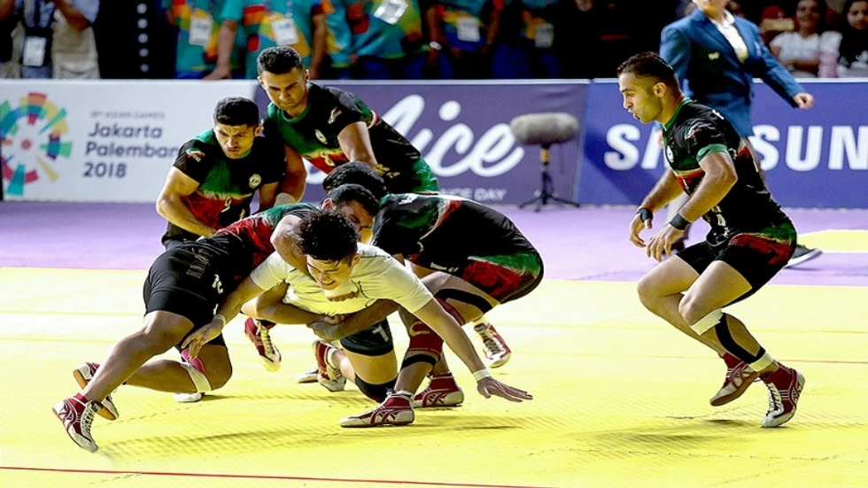

Sport pertains to any form of competitive physical activity or game that aims to use, maintain, or improve physical ability and skills while providing enjoyment to participants and, in some cases, entertainment to spectators.
Right now Indian Air Force mission be like: We enter the territory once and finish you, for life...... kabaddi, kabbadi

A gun is no more dangerous than a cricket bat in the hands of a madman.
It's important to just kind of get away from your sport until you miss it .
Sport is usually governed by a set of rules or customs, which serve to ensure fair competition, and allow consistent adjudication of the winner. Winning can be determined by physical events such as scoring goals or crossing a line first. It can also be determined by judges who are scoring elements of the sporting performance, including objective or subjective measures such as technical performance or artistic impression.
Records of performance are often kept, and for popular sports, this information may be widely announced or reported in sport news. Sport is also a major source of entertainment for non-participants, with spectator sport drawing large crowds to sport venues, and reaching wider audiences through broadcasting. Sport betting is in some cases severely regulated, and in some cases is central to the sport.
History
Artifacts and structures suggest sport in China as early as 2000 BC. Gymnastics appears to have been popular in China's ancient past. Monuments to the Pharaohs indicate that a number of sports, including swimming and fishing, were well-developed and regulated several thousands of years ago in ancient Egypt. Other Egyptian sports included javelin throwing, high jump, and wrestling. Ancient Persian sports such as the traditional Iranian martial art of Zoorkhaneh had a close connection to warfare skills. Among other sports that originated in ancient Persia are polo and jousting.
Sports have been increasingly organised and regulated from the time of the ancient Olympics up to the present century. Industrialisation has brought increased leisure time, letting people attend and follow spectator sports and participate in athletic activities. These trends continued with the advent of mass media and global communication. Professionalism became prevalent, further adding to the increase in sport's popularity, as sports fans followed the exploits of professional athletes – all while enjoying the exercise and competition associated with amateur participation in sports. Since the turn of the 21st century, there has been increasing debate about whether transgender sports people should be able to participate in sport events that conform with their post-transition gender identity.
Sports in India refers to the large variety of games played in India, ranging from tribal games to more mainstream sports such as, cricket, football, field hockey, badminton and kabaddi. India's diversity of culture, people, and tribes are reflected in the wide variety of sporting disciplines in the country.
Cricket has been the most popular sport in India, the country has hosted and won the Cricket World Cup on multiple occasions. Field Hockey is the most successful sport for India at the Olympic Games; the Indian men's team have won twelve Olympic medals including eight gold medals. Other popular sports in India are football, badminton, Kabaddi, shooting, Wrestling, boxing, tennis, squash, weightlifting, gymnastics, athletics, table tennis, basketball, volleyball. Popular indigenous sports include Chess, kho-kho, Cycling, fighter kite, leg Cricket, polo, snooker, gillidanda and Rugby.
Kabaddi is an ancient sport and one of the fastest growing sports of India. India won many matches and seasons of Kabaddi at the Asian Games , Kabaddi at the South Asian Games , Asian Kabaddi Championship and all three seasons of the Kabaddi World Cup (Standard style) and Women's Kabaddi World Cup (Circle Style). India Men's team and Women's team both are the most successful of the Kabaddi sport.